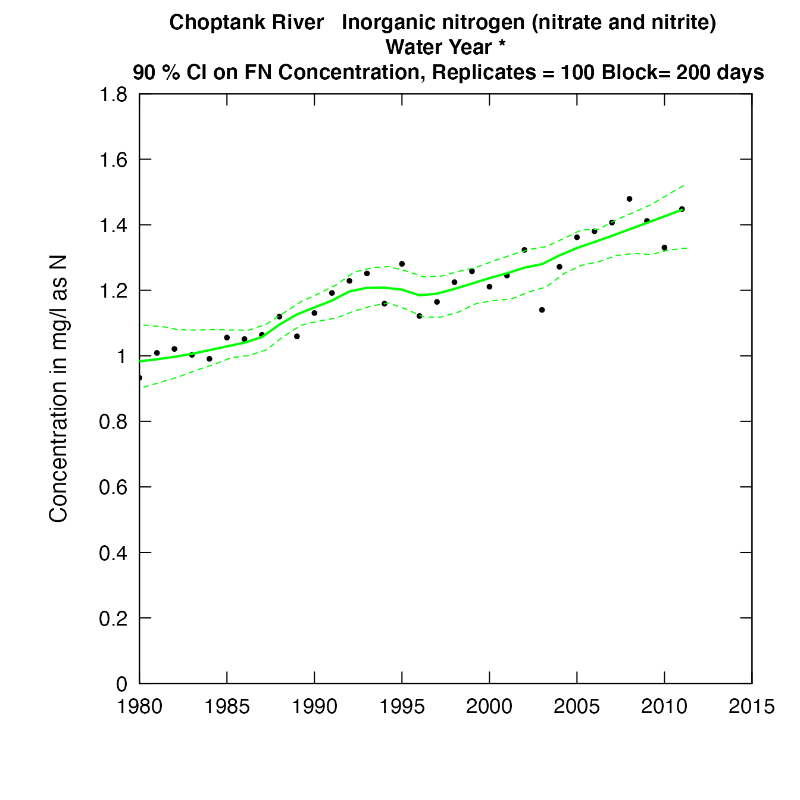
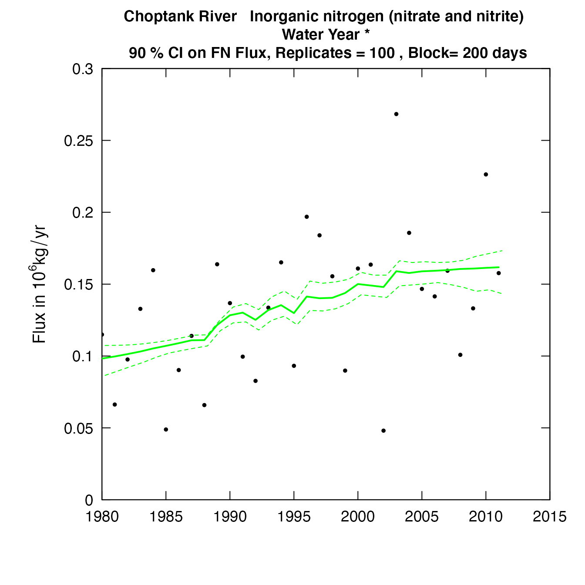

vignettes/Enhancements.Rmd
Enhancements.RmdThis vignette documents a set of enhancements of the EGRETci software package. EGRET is “Exploration and Graphics for RivEr Trend” which has been developed my Robert M. Hirsch and Laura DeCicco of the U.S. Geological Survey. The EGRETci package contains functions that can be used to evaluate the uncertainty associated with results generated by the EGRET code. This document, on the EGRETci 2.0 enhancements assumes that the reader already has a good understanding of WRTDS (Weighted Regressions on Time Discharge and Season), and the EGRET 2.0 package and the EGRET 3.0 enhancements (“Guide to EGRET 3.0 enhancements”) as well as the documentation “Introduction to EGRET Confidence Intervals”"). The two releases EGRET 3.0 and EGRETci 2.0 are tightly linked in terms of naming conventions and the sharing of various objects between them. Brief reference is made to these EGRETci functions in the documentation of the EGRET 3.0 enhancements.
The releases of EGRET 3.0 add some new flexibility to the WRTDS method. The flexibility that the new version provides are of two kinds. One is an ability to partition the sample data into two periods, one before and one after, a change that happened in the watershed that we believe to have had an important, sudden, but lasting impact on water quality. The other is the ability to relax the assumption of stationarity of streamflow in the flow normalization process. As shorthand we refer to the first of these enhancements as the “wall”, and the second as “Generalized Flow Normalization.” These are discussed in detail in “Guide to EGRET 3.0 enhancements” and are not repeated here.
This document discusses the motivations and general concepts behind these enhancements, and then move to instructions for implementation. It is assumed that the reader already has a good working knowledge of WRTDS, EGRET and EGRETci. Hirsch, Moyer and Archfield, 2010 (https://onlinelibrary.wiley.com/doi/abs/10.1111/j.1752-1688.2010.00482.x), Hirsch and DeCicco, 2015 (https://pubs.usgs.gov/tm/04/a10/), Hirsch, Archfield and DeCicco, 2015 (https://www.sciencedirect.com/science/article/pii/S1364815215300220?via%3Dihub) and the “Introduction to the EGRET package” included with the EGRET package and the “Introduction to EGRET Confidence Intervals” included with the EGRETci package.
EGRETci 2.0 is designed so that it will produce exactly the same outputs as EGRETci 1.0 version did using the same set of commands that would have been used with one notable exception. Previous versions of EGRETci did not require a “startSeed” argument when running the confidence intervals in parallel. The reason for the change is to assure that we can now reproduce all bootstrapping calculations. It is important to adjust any parallel code to include that argument as follows (specifically the “startSeed = n” argument):
nCores <- detectCores() - coreOut
cl <- makeCluster(nCores)
registerDoParallel(cl)
repAnnual <- foreach(n = 1:nBoot,.packages=c('EGRETci')) %dopar% {
annualResults <- bootAnnual(eList,
blockLength,
startSeed = n)
}
stopCluster(cl) There are three distinct types of problem set-ups that are possible in the new formulation and each of them has its own distinct workflow and outputs. They are known as Pairs, Series, and Groups. What do these terms mean here? Pairs is for the comparison of any two years in the study period, Series is to describe the entire study period to produce graphs of the change as a function of time, Groups is for the comparison of any two groups of contiguous years. The appropriate use of each of these three set-ups is described in detail in the “Guide to EGRET 3.0 enhancements.”
The function that does the uncertainty analysis for determining the change between any pair of years is called runPairsBoot. It is very similar to the wBT function that runs the WRTDS Bootstrap Test in EGRETci 1.0. It differs from wBT in that it runs a specific number of bootstrap replicates, unlike the wBT approach that will stop running replicates based on the status of the test statistics along the way.
The call to runPairsBoot is very simple, because it gets virtually all of the information about how the analysis is to be set up from information in the attributes of pairResults. The only arguments that are required are the eList and pairResults and three more arguments specifically related to the bootstrap process. These are described here:
nBoot This is the number of bootstrap replicates to run. It has a default value of 100. A value of 100 should give rough approximation of the correct likelihood of the trend direction. For example, if the bootstrap results were upwards trends in 98 of 100 replicates, then we could say that we have about 95% confidence that the true likelihood that the trend is upwards is between 0.945 and 0.998 (rather strong evidence of an upwards trend). For purposes of a published study going to nBoot = 500 may be appropriate. For example if we had 490 upwards trends out of 500 replicates we could say with 95% confidence that the likelihood that the true trend is upwards is between 0.966 and 0.991. To see if it is even worthwhile to do a large number of replicates one could use a very small number of replicates, say nBoot = 10 and if there is a fairly even mix of increases and decreases we can dispense with the high number of replicates and simply conclude that it is about as likely up as it is down. In a few cases some of the bootstrap replicates have results that do not converge and they generate an error message but no results for that replicate. To deal with that, the function is designed to run more replicates than nBoot but to quit when it reaches nBoot
startSeed This is the seed for the random number generator, which is used to create the random bootstrap replicates of the data. It has a default value but any integer will work. Knowing the startSeed value is vital to reproducing the results. If a different value of startSeed is used in a later run it will produce slightly different results, but with nBoot of 200 or more these differences should be trivially small.
blockLength This is the block length for the block bootstrap resampling (see https://doi.org/10.1016/j.envsoft.2015.07.017 for an explanation). This argument has a default of 200 so it shouldn’t need to be specified.
Here we will run a trivially small example of runPairsBoot based on the problem set up in the second example of runPairs in the EGRET 3.0 enhancements User Guide.
library(EGRET)
library(EGRETci)
eList <- Choptank_eList
pairResults2 <- runPairs(eList, year1 = 1985, year2 = 2010,
windowSide = 7, flowBreak = TRUE,
Q1EndDate = "1995-05-31", wall = TRUE,
sample1EndDate = "1995-05-31",
QStartDate = "1979-10-01",
QEndDate = "2010-09-30",
paStart = 4, paLong = 5)
bootPairOut2 <- runPairsBoot(eList,
pairResults2,
nBoot = 10) ##
## iBoot, xConc and xFlux 1 0.4048814 0.03866322
## iBoot, xConc and xFlux 2 0.4186308 0.04813132
## iBoot, xConc and xFlux 3 0.4114679 0.04757094
## iBoot, xConc and xFlux 4 0.4314246 0.04415677
## iBoot, xConc and xFlux 5 0.3456514 0.03323089
## iBoot, xConc and xFlux 6 0.4639338 0.04792485
## iBoot, xConc and xFlux 7 0.3480087 0.03212271
## iBoot, xConc and xFlux 8 0.3694464 0.03815445
## iBoot, xConc and xFlux 9 0.3502027 0.04509857
## iBoot, xConc and xFlux 10 0.4180412 0.04559656
## Choptank River
## Inorganic nitrogen (nitrate and nitrite)
## Season Consisting of Apr May Jun Jul Aug
##
##
## Change estimates are for 2010 minus 1985
## Sample data set was partitioned with a wall at 1995-05-31
##
##
##
## Should we reject Ho that Flow Normalized Concentration Trend = 0 ? Reject Ho
## best estimate of change in concentration is 0.412 mg/L
## Lower and Upper 90% CIs 0.346 0.464
## also 95% CIs 0.346 0.464
## and 50% CIs 0.350 0.422
## approximate two-sided p-value for Conc 0.18
## * Note p-value should be considered to be < stated value
## Likelihood that Flow Normalized Concentration is trending up = 0.955 is trending down = 0.0455
##
## Should we reject Ho that Flow Normalized Flux Trend = 0 ? Reject Ho
## best estimate of change in flux is 0.0456 10^6 kg/year
## Lower and Upper 90% CIs 0.0321 0.0481
## also 95% CIs 0.0321 0.0481
## and 50% CIs 0.0369 0.0477
## approximate two-sided p-value for Flux 0.18
## * Note p-value should be considered to be < stated value
## Likelihood that Flow Normalized Flux is trending up = 0.955 is trending down = 0.0455
##
## Upward trend in concentration is highly likely
## Upward trend in flux is highly likely
## Downward trend in concentration is highly unlikely
## Downward trend in flux is highly unlikelyThe output is pretty self-explanatory and the latter part of it is identical to the summary information provided by wBT.
The object returned by runPairsBoot is virtually the same as the eBoot object returned by wBT. It contains the data frame called bootOut which contains all the results of the test that are shown in the console. One new feature here is bootOut$nBootGood. Because there is a small chance that the bootstrap results will contain a small number of iterations that fail to complete it may end up with a number of valid replicates that is less than nBoot. The number of usable replicates is nBootGood. The other parts of the returned object are the same as those returned from wBT.
One of the outputs we can use to describe the results of the test is the histogram of percentage changes. These can be done with the plotHistogramTrend function just as they have been in the EGRETci 1.0.3 software. The only difference in the call to the function is that we don’t use caseSetUp in runPairs so that argument is set to caseSetUp = NA.
To call this function for a runPairsBoot result would look like this:
plotHistogramTrend(eList, eBoot, caseSetUp = NA,
flux = TRUE, xMin = NA, xMax = NA,
xStep = NA, printTitle = TRUE,
cex.main = 1.1, cex.axis = 1.1,
cex.lab = 1.1, col.fill = "grey", ...)The only two arguments required are eList, and eBoot which represents the output from runPairsBoot.
Here are the calls to plotHistogramTrend first for flux, and then for concentration. [We have substituted in a set of runPairsBoot outputs for which nBoot = 100 rather than using the one shown above.]
plotHistogramTrend(eList,bootPairOut2, caseSetUp = NA)
plotHistogramTrend(eList,bootPairOut2, caseSetUp = NA, flux = FALSE)So, what the results clearly show us is that flux has clearly increased and probably by a magnitude of a few hundred percent and concentration has clearly increased probably by an amount between about 100 % to 200 %.
The purpose of Series analysis is to create a time series of flow-normalized concentrations and flow-normalized flux values. The function that does this is runSeries in the EGRET package.
In the case of runSeries we can do uncertainty analysis which provides us with confidence intervals around the flow normalized time series that we estimated from running the runSeries function. In this case we actually use the same functions that were used in EGRETci 1.0.3, but they have been modified here to accommodate all of the flexible features of runSeries (but they run exactly as they did before if they were just working off of results from modelEstimation).
This is how it is called:
CIAnnualResults <- ciCalculations(eList,
startSeed = 494817,
verbose = TRUE, ...)The eList that is passed to the function should be a version of eList that has already been run through runSeries. So, for the example run shown above the eList argument would be eListOut. That version contains all the estimated values as well as all of the arguments that were used in the computation (related to the wall and flowBreak etc.). There is no need to specify startSeed, the default will be fine (unless one wants to explore how the results might change in another run of the function). To avoid seeing all the progress indicators on the screen one can set verbose = FALSE, but it may be desirable just to see that the job is continuing to run by setting verbose = TRUE. It can take a considerable amount of computer time.
The ... in the call specifically relate to some other bootstrap-related parameters that the user might wish to set. They can be left out of the call, and the program with interactively request the information, or they can be set directly in the call. We will set up to run the job specifying them without the interactive part (as would be done in a batch implementation).
We will run the bootstrap analysis here. We will use the output of the last run of runSeries example in the EGRET enhancement vignette.
eList <- Choptank_eList
eListOut <- runSeries(eList, windowSide = 7, verbose = FALSE)
CIAnnualResults <- ciCalculations(eListOut,
verbose = FALSE,
nBoot = 100,
blockLength = 200,
widthCI = 90)
CIAnnualResults <- ciCalculations(eListOut,
verbose = FALSE,
nBoot = 100,
blockLength = 200,
widthCI = 90)nBoot is the number of bootstrap replicates to be run. A result that is suitable for publication should probably have nBoot at least 100 and preferably 200. blockLength is typically set to 200. widthCI is the width of the confidence interval. If widthCI = 90 that means that the confidence intervals that will be drawn are the 5th and 95th percentiles.
We can visualize the results by using the plotConcHistBoot and plotFluxHistBoot functions (which were a part of the EGRETci 1.0.3 code). Running them with results from runSeries requires that we use the eList that is produced by the runSeries function. So, following the results we saw from runSeries we would obtain the confidence interval plots as follows. (Note that there are several other arguments to these functions that are the same as those used in plotConcHist and plotFluxHist).
plotConcHistBoot(eListOut, CIAnnualResults)
plotFluxHistBoot(eListOut, CIAnnualResults)
The function that does the uncertainty analysis for determining the change between two groups of years is called runGroupsBoot. The process is virtually identical to what is used for runPairsBoot, so much of the detail will be left out of this discussion. The call to runGroupsBoot is very simple, because it gets virtually all of the information about how the analysis is to be set up from information in the attributes of groupResults. The only arguments that are required are the eList and groupResults and three more arguments specifically related to the bootstrap process:
nBoot This is the number of bootstrap replicates to run. It has a default value of 100. In a few cases some of the bootstrap replicates have results that do not converge and they generate an error message but no results for that replicate. To deal with that the function is designed to run more replicates than nBoot but to quit when it reaches nBoot
startSeed This is the seed for the random number generator, which is used to create the random bootstrap resamples of the data. It has a default value but any integer will work.
blockLength This is the block length for the block bootstrap resampling. This argument has a default of 200 so it shouldn’t need to be specified.
Here we will run runGroupsBoot based on the problem set-up in the example of runGroups in the EGRET 3.0 Enhancements User Guide.
eList <- Choptank_eList
groupResults <- runGroups(eList,
group1firstYear = 1995, group1lastYear = 2004,
group2firstYear = 2005, group2lastYear = 2010,
windowSide = 7, wall = TRUE,
sample1EndDate = "2004-10-30",
paStart = 4, paLong = 2, verbose = FALSE)
bootGroupsOut <- runGroupsBoot(eList, groupResults, nBoot = 100)
iBoot, xConc and xFlux 1 0.1112342 0.00210587
iBoot, xConc and xFlux 2 0.2313755 0.01785959
iBoot, xConc and xFlux 3 0.1940411 0.01241572
iBoot, xConc and xFlux 4 0.1362666 0.01586453
iBoot, xConc and xFlux 5 0.06292122 -0.007460321
iBoot, xConc and xFlux 6 0.155426 0.0001782416
iBoot, xConc and xFlux 7 0.005606766 -0.01078393
iBoot, xConc and xFlux 8 0.2249887 0.02234805
iBoot, xConc and xFlux 9 0.2078581 0.0200677
iBoot, xConc and xFlux 10 0.184202 0.01364342
iBoot, xConc and xFlux 11 0.191663 0.01690589
iBoot, xConc and xFlux 12 0.1291275 0.01157755
iBoot, xConc and xFlux 13 0.08322428 0.007420818
iBoot, xConc and xFlux 14 0.2509934 0.02653539
iBoot, xConc and xFlux 15 0.1582714 0.01139846
iBoot, xConc and xFlux 16 0.1202528 0.005556409
iBoot, xConc and xFlux 17 0.07175938 -0.003486396
iBoot, xConc and xFlux 18 0.03284808 -0.01543805
iBoot, xConc and xFlux 19 0.08242534 -0.001544557
iBoot, xConc and xFlux 20 0.1627448 0.009068357
iBoot, xConc and xFlux 21 0.3101094 0.03109831
iBoot, xConc and xFlux 22 0.1352483 0.003423816
iBoot, xConc and xFlux 23 0.1856816 0.01151778
iBoot, xConc and xFlux 24 0.1067084 -0.002745697
iBoot, xConc and xFlux 25 0.1384229 0.009025054
iBoot, xConc and xFlux 26 0.1044397 0.004463952
iBoot, xConc and xFlux 27 0.1371231 0.004849107
iBoot, xConc and xFlux 28 0.1057587 0.002020604
iBoot, xConc and xFlux 29 0.06285098 -0.006140418
iBoot, xConc and xFlux 30 0.1053837 0.006480032
iBoot, xConc and xFlux 31 0.2348087 0.01868799
iBoot, xConc and xFlux 32 0.0809752 -0.004032307
iBoot, xConc and xFlux 33 0.1055674 0.004243022
iBoot, xConc and xFlux 34 0.1313141 0.0120335
iBoot, xConc and xFlux 35 0.07496742 -0.001147932
iBoot, xConc and xFlux 36 0.259437 0.01931961
iBoot, xConc and xFlux 37 0.2360811 0.01891111
iBoot, xConc and xFlux 38 0.01944388 -0.01482583
iBoot, xConc and xFlux 39 0.06970571 -0.003820835
iBoot, xConc and xFlux 40 0.0737763 -0.006203921
iBoot, xConc and xFlux 41 0.04751532 -0.007057069
iBoot, xConc and xFlux 42 0.223248 0.01829072
iBoot, xConc and xFlux 43 0.0878771 0.001692402
iBoot, xConc and xFlux 44 0.01341636 -0.02144129
iBoot, xConc and xFlux 45 0.2081807 0.01755321
iBoot, xConc and xFlux 46 0.1221659 0.003935921
iBoot, xConc and xFlux 47 0.09278815 0.009981752
iBoot, xConc and xFlux 48 0.05095054 -0.003292809
iBoot, xConc and xFlux 49 0.1453256 0.01266178
iBoot, xConc and xFlux 50 0.1416339 0.01254616
iBoot, xConc and xFlux 51 0.4064174 0.04352515
iBoot, xConc and xFlux 52 0.130523 0.004890011
iBoot, xConc and xFlux 53 0.1244287 0.007266819
iBoot, xConc and xFlux 54 0.1806815 0.009675149
iBoot, xConc and xFlux 55 0.1720944 0.00576974
iBoot, xConc and xFlux 56 0.2379197 0.02117021
iBoot, xConc and xFlux 57 0.1449829 0.01024958
iBoot, xConc and xFlux 58 0.28329 0.02452299
iBoot, xConc and xFlux 59 0.1690522 0.01051543
iBoot, xConc and xFlux 60 0.12694 0.007726314
iBoot, xConc and xFlux 61 0.09701123 -0.0041987
iBoot, xConc and xFlux 62 0.1383497 0.006674396
iBoot, xConc and xFlux 63 0.1424172 0.0007736108
iBoot, xConc and xFlux 64 0.1183457 0.00187264
iBoot, xConc and xFlux 65 0.146094 0.009399198
iBoot, xConc and xFlux 66 0.1733963 0.002191635
iBoot, xConc and xFlux 67 -0.01026774 -0.0204027
iBoot, xConc and xFlux 68 0.1662299 0.01413006
iBoot, xConc and xFlux 69 0.08120086 0.0005708573
iBoot, xConc and xFlux 70 0.1917981 0.02270401
iBoot, xConc and xFlux 71 0.1157307 0.001804805
iBoot, xConc and xFlux 72 0.06264893 -0.0128353
iBoot, xConc and xFlux 73 0.03711312 -0.01459279
iBoot, xConc and xFlux 74 0.05306334 -0.005625662
iBoot, xConc and xFlux 75 0.1475555 0.007394673
iBoot, xConc and xFlux 76 0.117711 0.0009185418
iBoot, xConc and xFlux 77 0.1121241 -0.004503165
iBoot, xConc and xFlux 78 0.06010995 -0.001444297
iBoot, xConc and xFlux 79 0.2004474 0.03582305
iBoot, xConc and xFlux 80 0.1002849 0.003946271
iBoot, xConc and xFlux 81 0.2177704 0.01507397
iBoot, xConc and xFlux 82 0.2552872 0.01902596
iBoot, xConc and xFlux 83 0.1549289 0.007406193
iBoot, xConc and xFlux 84 0.2725142 0.02991958
iBoot, xConc and xFlux 85 0.1566289 0.006519237
iBoot, xConc and xFlux 86 0.2439327 0.01873373
iBoot, xConc and xFlux 87 0.2061489 0.0262877
iBoot, xConc and xFlux 88 0.1919945 0.01642432
iBoot, xConc and xFlux 89 0.1704908 0.01144599
iBoot, xConc and xFlux 90 0.2072139 0.0145469
iBoot, xConc and xFlux 91 0.2399481 0.01762005
iBoot, xConc and xFlux 92 0.2014063 0.01811737
iBoot, xConc and xFlux 93 0.1437091 0.008101229
iBoot, xConc and xFlux 94 0.1796633 0.009883034
iBoot, xConc and xFlux 95 0.09747391 -0.0009297245
iBoot, xConc and xFlux 96 0.1066498 0.003860713
iBoot, xConc and xFlux 97 0.1565149 0.007076587
iBoot, xConc and xFlux 98 0.2323236 0.02383054
iBoot, xConc and xFlux 99 0.1258737 0.01037859
iBoot, xConc and xFlux 100 0.2255112 0.01616338
Choptank River
Inorganic nitrogen (nitrate and nitrite)
Season Consisting of Apr May
Change estimates for
average of 2005 through 2010 minus average of 1995 through 2004
Sample data set was partitioned with a wall at 2004-10-30
Should we reject Ho that Flow Normalized Concentration Trend = 0 ? Reject Ho
best estimate of change in concentration is 0.153 mg/L
Lower and Upper 90% CIs 0.03306 0.25923
also 95% CIs 0.00971 0.29603
and 50% CIs 0.09818 0.19353
approximate two-sided p-value for Conc 0.033
Likelihood that Flow Normalized Concentration is trending up = 0.985 is trending down = 0.0149
Should we reject Ho that Flow Normalized Flux Trend = 0 ? Do Not Reject Ho
best estimate of change in flux is 0.00931 10^6 kg/year
Lower and Upper 90% CIs -0.014505 0.026523
also 95% CIs -0.017796 0.033343
and 50% CIs 0.000622 0.016089
approximate two-sided p-value for Flux 0.47
Likelihood that Flow Normalized Flux is trending up = 0.767 is trending down = 0.233
Upward trend in concentration is highly likely
Upward trend in flux is likely
Downward trend in concentration is highly unlikely
Downward trend in flux is unlikely
The output is pretty self-explanatory and virtually the same as that which is generated by runPairsBoot.
The object returned by runGroupsBoot is virtually the same as the eBoot object returned by wBT. The object returned, called bootGroupsOut contains all the results of the test that are shown in the console.
We cam visualize the results of the test as a the histogram of percentage changes. These can be done with the plotHistogramTrend function.
To call this function for a runGroupsBoot result would look like this:
plotHistogramTrend(eList, eBoot, flux = TRUE,
xMin = NA, xMax = NA, xStep = NA,
printTitle = TRUE, cex.main = 1.1,
cex.axis = 1.1, cex.lab = 1.1,
col.fill = "grey", ...)The only two arguments required are eList, and eBoot which represents the output from runGroupsBoot.
Here are the calls to plotHistogramTrend first for flux, and then for concentration. The xMin, xMax, and xStep arguments shown below were selected based on first viewing the results using the default values and then searching for a set of values for the three arguments that provided a good representation of the distribution.
plotHistogramTrend(eList, bootGroupsOut,
xMin = -30, xMax = 40, xStep = 10)
plotHistogramTrend(eList, bootGroupsOut,
flux=FALSE, xMin = -30, xMax = 40, xStep = 10)What the results clearly show us is that both flux and concentration indicate that it is somewhat more likely to have been an increase rather than a decrease between the two groups of years. Our best estimate is an increase is a little less than about + 10%. For both flux and concentration the trend is fairly likely to be in the range from -20 % to about +30%.